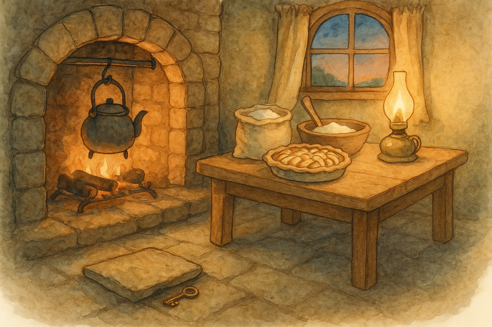

Fourth Age, in the Shire when the evenings linger and the kettle is never far from song
There are folk who think a key is a thing made for keeping — keeping out weather, keeping in coin, keeping in secrets. But in the Shire, if a lock is worth the trouble of turning, it is usually because someone is meant to be let in.
It began, as many Shire mysteries do, with baking.
I had set apples and brown sugar in a dish and tucked them under a crust as snug as a featherbed. The kettle was on, muttering to itself. The windows had gone dark with dusk, and the round door had that comfortable look of being quite certain it would not open for any unexpected business.
That was when I discovered that the pantry key was gone.
Now, I am no stranger to mislaid objects. Buttons have a talent for wandering, and teaspoons — I have long suspected — hold private councils and go off in a body when no one is watching. But a key is different. A key has a solemn air. It is not supposed to play tricks.
I searched the proper places first: the hook by the dresser, the bowl where odds and ends gather like sheep, the pocket of the coat I had worn in the morning. I even looked beneath the mat by the threshold, though I never put things beneath mats and neither should you. The key was nowhere, and the apples were beginning to smell as if they meant to have company.
“Thief!” I said aloud — not with any real belief, mind you, but because a problem seems smaller once it has been accused. “Little thief with quiet feet.”
The kettle answered with a sharp little click, as if it agreed.
I went to the pantry door and listened, my ear against the wood. (Do not laugh. Many doors speak to a patient listener, especially if there is good food on the other side.) There was, of course, no answer. The lock sat there, as innocent as a seed, and I felt myself growing absurdly cross with it.
It was then that I heard a faint tapping — not at my door, but below it, like a mouse worrying the root of a wall.
I turned and found old Mrs. Sandyman standing in the passage, her shawl pinned tight and her nose lifted in the manner of folk who do not approve of lingering draughts. Behind her, half-hidden, was her grandson Ponto, who had the wide-eyed look of one who has done something brave and immediately regretted it.
“Evening,” I said, for there is no better weapon against awkwardness than good manners. “Come in, both of you. Mind the mat.”
Mrs. Sandyman did not come in. She remained as she was, like a gatepost. “We cannot,” she said, as if I had invited her to dance on the table. “Ponto’s—” She glanced at the boy with the sharpness of a sparrow. “Ponto’s done a foolish thing.”
Ponto swallowed. In his hand he held something small and bright. It winked in the lamplight.
My pantry key.
“I didn’t mean to steal it,” he blurted. “It was on the hook and it looked lonely, and I wanted to see if it really did open the pantry, and then it did, and then I couldn’t— I couldn’t put it back because I heard your kettle, and I thought you’d come in, and then I thought you’d know, and then—”
He ran out of breath, which is always the first mercy a confession earns.
I took the key from him gently. It was warm from his palm, and for a ridiculous moment I was relieved, as if I had found an old friend. “Thank you for bringing it back,” I said. “That is the important part.”
Mrs. Sandyman made a sound that meant she would have preferred a lecture. “He ought to be punished.”
“Quite,” I said, and looked at Ponto. “What did you see in there?”
Ponto’s ears went pink. “Jars,” he admitted. “And— and a sack of flour. And your pickles.”
“Did you take anything?”
“No!” he said, so fiercely that I believed him at once. “I only looked.” Then, softer: “It smelled like winter. Like pepper and dry apples.”
I nodded. That was true, and it pleased me more than it should have. “Pantries ought to smell like winter,” I said. “It means someone thought ahead.”
I could feel Mrs. Sandyman’s disapproval gathering itself like a stormcloud. So I did what any sensible hobbit does when faced with a stormcloud: I offered it tea.
“Mrs. Sandyman,” I said, “if you have the time for it, you may come in and warm yourself. Ponto can help me set the table. That will be his punishment: he will carry plates without dropping them, and he will stir the apples without licking the spoon.”
Ponto looked alarmed. This, I assure you, is the proper expression on a hobbit-lad’s face when he is asked to be useful.
Mrs. Sandyman hesitated. The kettle sighed. The smell of baking grew bolder and made its argument in the air. At last she stepped over the threshold, and the round door shut behind her with a sound like an opinion changing.
While Ponto fetched cups, I went back to the pantry and fitted the key in the lock. It turned with a familiar click. I opened the door, not wide, but just enough to let the dark, spice-sweet air come out and greet me.
Inside, on the lowest shelf, there sat a small tin of honey-cakes — the sort I keep for unexpected visits, or for expected ones that arrive looking like they have walked farther than they meant to. I took it down.
Then, before I shut the door, I did an odd thing. I knelt by the hearth and prised up the edge of the nearest hearthstone — only a finger’s width, mind you, for one does not go pulling at stones in a respectable hole — and I slipped the pantry key underneath.
It lay there in the warm dust, half-hidden, close enough to the fire to remember what it was for.
Ponto saw me do it. His eyes grew rounder still. “Aren’t you afraid someone will take it again?” he whispered, as if the hearth might be listening.
“Someone might,” I said. “But if a hobbit comes to my door hungry, or tired, or frightened, and I am not here — well. I would rather the pantry open than the visitor go away.”
He frowned, trying to fit that into the shape of the world he knew. “Even if it’s a stranger?”
“Especially if it’s a stranger,” I said. “Strangers are only friends who have not yet been offered tea.”
Mrs. Sandyman, who had been watching with a narrowed eye, made another sound — but this one had softened at the edges. She reached out and straightened Ponto’s collar with the tenderness she pretended not to own. “Do not take it again,” she told him. “Not unless you mean to use it properly.”
Ponto nodded solemnly, as if he had been entrusted with a great secret. In a way, he had.
We ate apples under crust, and the honey-cakes besides. Mrs. Sandyman spoke ill of draughts and strangers and the general decline of manners, but she accepted a second cup of tea and did not once look as if she wished to leave. Ponto did not lick the spoon. He looked at the hearthstone now and again as if it were a sleeping dog.
Later, when they had gone and the kettle had settled into silence, I sat by the fire and considered the little key under the stone.
Locks, I reflected, are all very well. But the best kind of safety is not the kind you bolt fast. It is the kind you make — with warm light, a steady hearth, and a key that remembers it was meant, in the end, to turn toward welcome.
— Bilbo